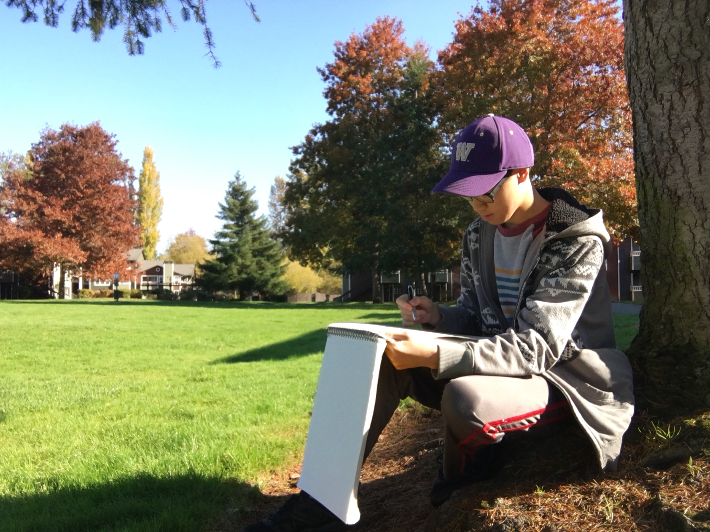
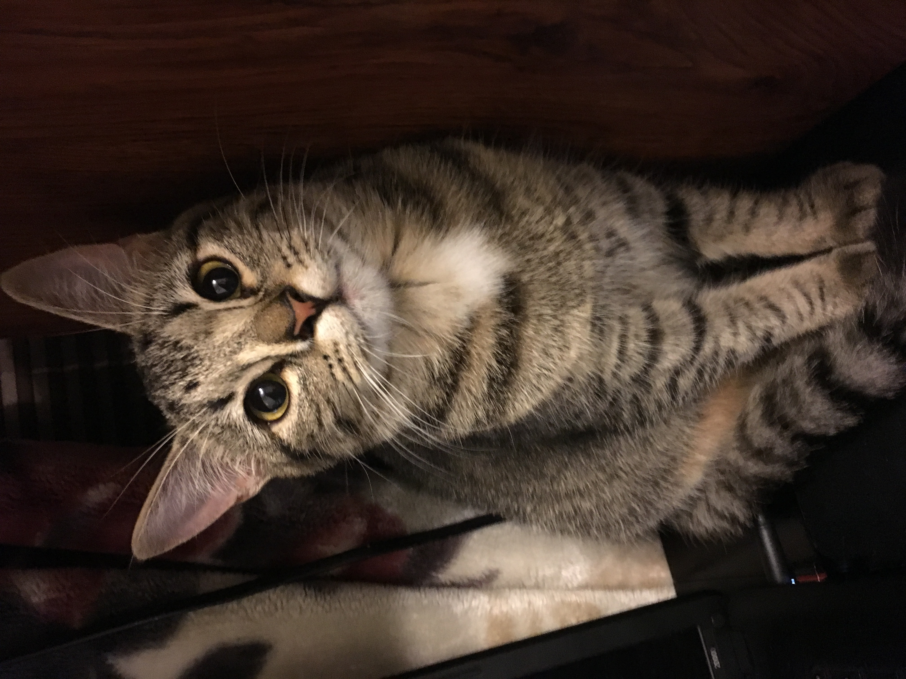
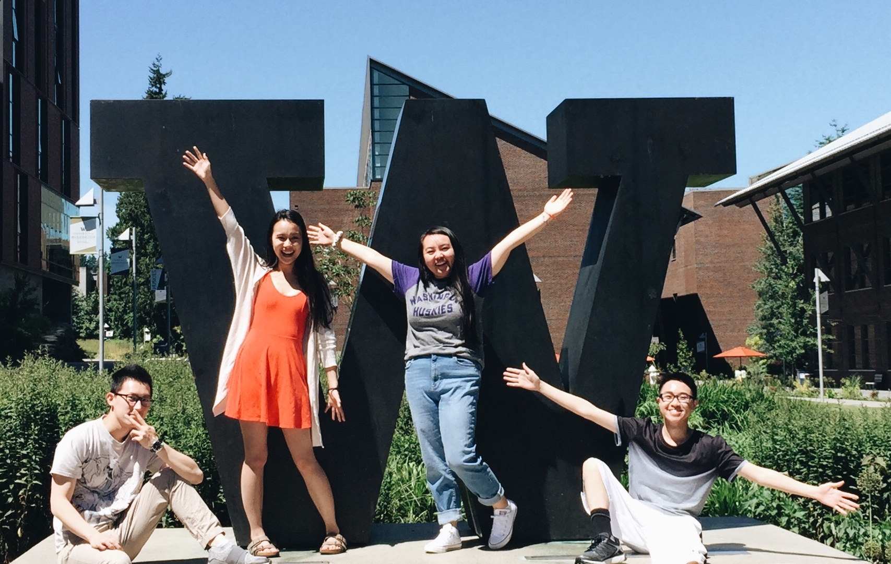

Bio
Hello. My name is David Dinh. Art has always been my number one hobby. I like to doodle and paint, but I also play instruments like the piano and the acoustic guitar for fun. I'm currently exploring photography and animation. I'm an junior studying at the University of Washington, Bothell campus. I'm planning to major in Interactive Media Design with a focus on graphic design and animation. I am minoring in Visual and Media Arts to expand on my skills and knowledge in visual art. In the future, I hope to become a visual or graphic designer (maybe freelance) for multiple local businesses in the Bothell and Seattle area and help out with marketing as I look forward to seeing their growth - financially and in publicity.
Why I Make Abstract Art

Before I became obsessed with portrait art and painting, I was creating art with nothing but colored pencils,
markers, pens, and a pencil.
As a kid, I was fascinated with everything from the animated energy of cartoon shows
to the iconic gaming world of Pokemon and Mario games. You can probably imagine I was a cartoon and game junkee at the time. I live and breathe the junkee life.
Looking back throughout the years, I have realized how much innocence and carefree-ness I had back then was reflected in my art.
Not only that, but I was also fascinated with geometry and color. The form, the composition, the saturation of colors, how the lines and color play off of each other.
I studied some artists like Andy Warhol, MC Escher, and Kandinsky. There was just something about their work that captivates the eye.
They don't just plop a bunch of shapes and colors onto a medium. They create a whole 'nother world that's almost abstract, yet otherworldly.
Sometimes I dream about living inside their paintings. Even when I was such a video game and cartoon addict, I've always wondered what it would
be like to live inside their universe.
My childhood self hated the unglamorous-ness of the real world (and it still applies).
My mindset when making art was always "Why not make another universe to live in?"
So my abstract art is not only something experimental and worth developing, but also, in a way, an escape from reality.
Why I Make Portraits

Doing commissions and taking a college drawing class definitely influenced my interest in drawing people. I started doing commissions in 2016 when my friend Josh came up to me and said he was willing to pay me to draw Tupac. Back then, I knew it was going to be way out of my comfort zone because I was so used to making abstract art. However, I did whatever I could to make my friend happy. And ever since then, he became my main inspiration for doing commissions for most of my summers. I draw portraits for my own personal pleasure, but sometimes for other people when I do commissions. Then, in the summer of 2018, I took Intro to Drawing where I learned about composition, different mediums, proportions, and using shading and lighting to make realistic sketches. Ever since, I have a better sense on how to draw faces and bodies. It's the most complex type of art I've ever done.
Why I Paint

I started to paint when I was in my junior year in Squalicum High School. I took an AP Art class and basically made some "art friends". Little did I know,
lot of them had painting experience and their pieces were extremely good. I was so blown away by what they could do, I got inspired and ended up doing painting
for the first time. From that point on, I taught myself the art of acrylic painting, with the help from my high school art teacher, Mr. Rostykus. (Shout out to him!)
I was interested in many artists who paint, from Impressionist painters to YouTube art gurus. Of course, I was inspired by Bob Ross. But I also looked up to Claude Monet, Vincent van Gogh,
and a small YouTuber named Robin Clonts. She taught me tips and life hacks on acrylic painting and combined it with humor and playfulness.
Fast forward to college, I took a Creativity and Mixed Media class in my freshman year in 2017, where I explored more ways to add more media to my painting repertoire.
It was an amazing experience getting to know my classmates and their vastly unique art styles as well as participating in the class discussions.